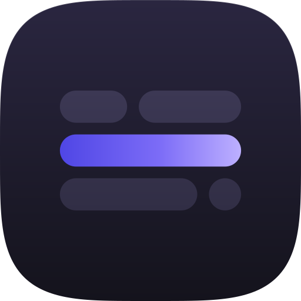
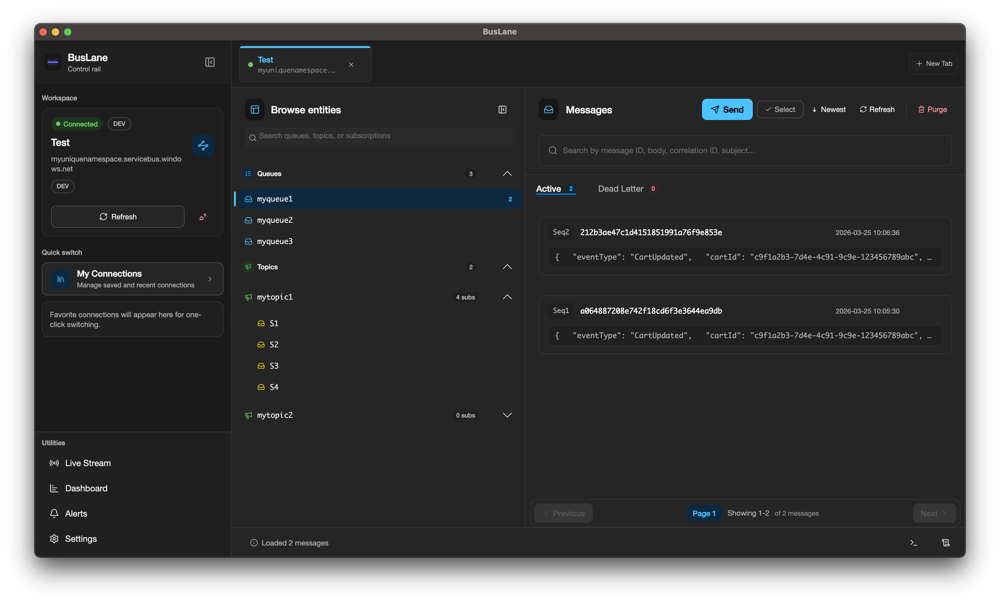
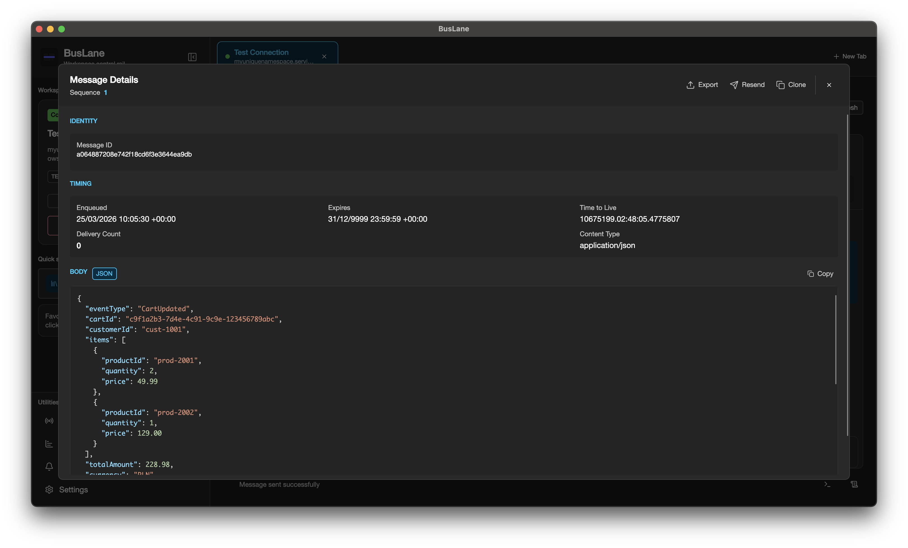
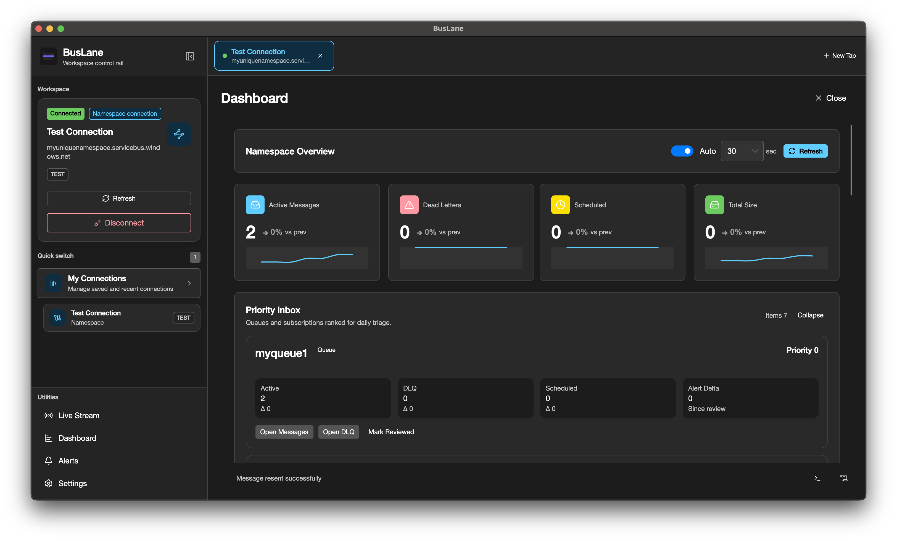
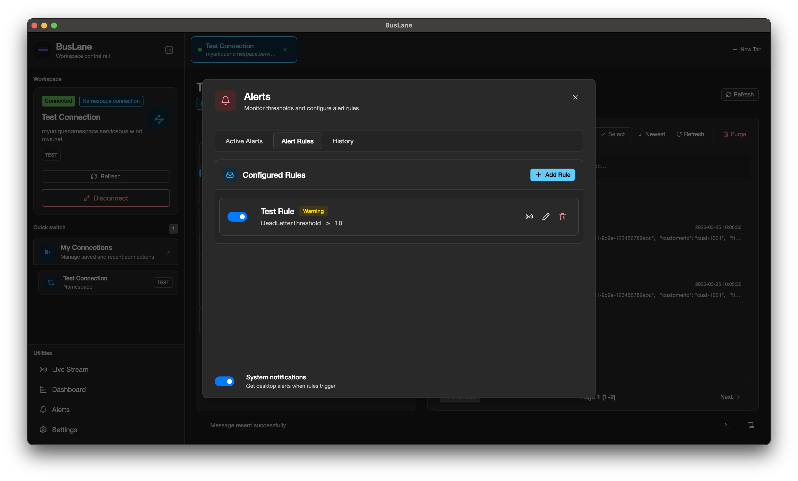

Inspect before you act.
Browse queues, topics, and subscriptions. Peek at messages without consuming them; search and filter to find the payload you need.
- Read-only peek
- Body & properties
- Session-enabled entities

BusLane DownloadInspect messages, recover dead letters, and monitor your namespaces. One open-source desktop workspace for Azure Service Bus.
macOS · Windows · Linux MIT licensed
Your entities, payloads, and message operations in one place.
See what you can do



The everyday work of Service Bus, brought together. Explore safely, investigate failures, and take the next action with the message in front of you.
Browse queues, topics, and subscriptions. Peek at messages without consuming them; search and filter to find the payload you need.
Inspect dead-letter messages and resend them. Receive messages under a lock to complete, abandon, defer, dead-letter, or renew the lock.
Compose and send messages, or schedule delivery. Search, clone, cancel, and reschedule messages from the scheduled-message console.
The console tracks messages scheduled through BusLane. Local status does not verify whether a schedule still exists at the broker.
Export queues, topics, subscriptions, and rules. Compare a snapshot against another namespace, review the dry run, then import or clone.
Imports create missing entities and update supported settings. They do not delete target entities.
Follow message activity with live streaming and charts. Set configurable alerts and review activity history without leaving your desktop workspace.
Take a closer lookUse your Azure account or connect directly to a namespace. Start with the connection method that fits your environment.
Use Azure Identity to discover subscriptions and namespaces available to your account.
Required access depends on your operation. The README prerequisites list Reader, Azure Service Bus Data Receiver, and Azure Service Bus Data Sender.
Connect directly with a Service Bus connection string and keep saved connections in your library.
Saved connection strings use AES-256 encryption with machine-specific keys. Choose credentials with permissions for your intended operations.
Optional app lock adds a launch-time password gate, a recovery code, and Touch ID or Windows Hello shortcuts where supported. Enable it in Settings → Security and save your recovery code.
Security policyOpen source. MIT licensed. Yours to use, inspect, and improve.
Apple Silicon & Intel
x64
x64
Choose the package matching your operating system and architecture on the release page. Read release notes
Bring the .NET 10 SDK. Clone the repository, build, and launch BusLane from source.
Explore the sourcegit clone https://github.com/soliktomasz/BusLane.git
cd BusLane
dotnet build
dotnet run --project BusLane/BusLane.csprojNo. Peek is read-only. Settlement actions require receiving messages under a lock first; actions depend on the broker lock remaining valid.
The scheduled-message console indexes messages scheduled through BusLane. Azure Service Bus does not provide an API to enumerate all scheduled messages. Refresh reloads the local index; it cannot confirm that a schedule still exists at the broker. Read the workflow details.
The repository README covers installation, prerequisites, connection modes, and app lock. Start there for platform-specific installation notes.
Report a bug or request a feature, or fork the repository and open a pull request. For sensitive security reports, follow the security policy.